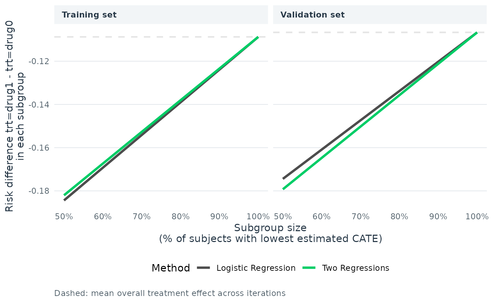
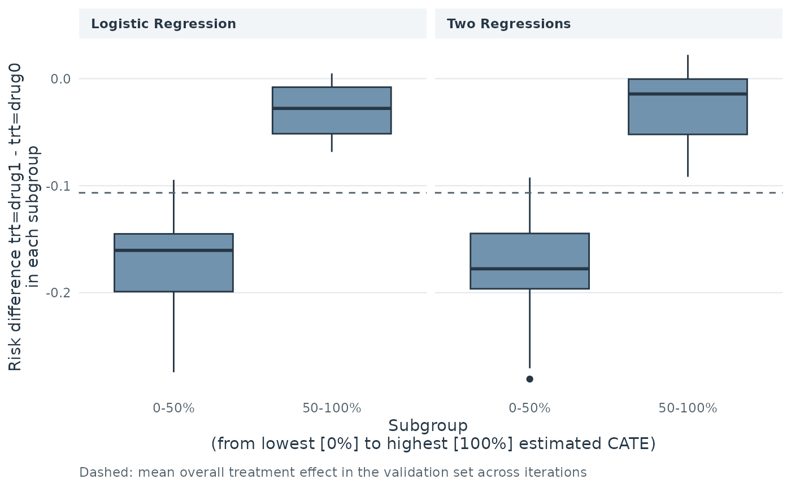

This vignette fits and internally validates conditional treatment-effect scores for binary outcomes. The companion ATE example estimates the population-average effect using the same data. Score fitting and validation are distinct; estimated subgroups from the fitting sample are not independent validation.
Prepare the data
library(precmed)
binaryExample <- simulate_binary(n = 4000, seed = 2026,
followup = 1, threshold = 0)
outcome_formula <- y ~ age + female + previous_treatment + previous_cost +
previous_number_relapses
ps_formula <- trt ~ age + previous_treatmentThe binary outcome indicates at least one relapse within one year; treatment assignment depends on age and previous treatment. The scores describe treatment differences in relapse risk. The data are synthetic and the simulation parameters are illustrative.
Estimate CATE scores
CATE scores estimate the difference in relapse probability for
patients with different baseline covariates. The logistic
method fits one logistic model with treatment-covariate interactions;
twoReg cross-fits separate logistic outcome models and a
treatment model, then projects augmented outcomes for each arm onto the
outcome-model design. The difference is a doubly robust linear
projection of the risk difference if either the treatment model or both
outcome models are correct, subject to identification, positivity and
truncation. It need not lie between -1 and 1. The boosting
method fits a Bernoulli gradient boosting model in each treatment arm
and subtracts the predicted relapse probabilities. Five-fold
cross-validation selects the number of trees in each arm;
tree.depth and n.trees.boosting control the
fitted trees. These scores are estimated on the training data; the
subgroup ATEs shown by catefit() use the doubly robust
estimator and the same data used to build the scores, so they may be
optimistic. Chapter 17, “Introduction to methods for personalizing
medicine,” discusses treatment effect heterogeneity and CATE prediction
(Hoogland et al. 2026).
Inspect CATE scores and subgroup estimates
The fitted scores estimate differences in relapse probability for
patients with different baseline covariates. Use predict()
to retrieve scores for the original analysis sample; prediction for new
data is not currently supported. Below are the first 6 scores from the
two-regression method.
scores <- predict(fit_cate, method = "twoReg")
head(scores)
#> 1 2 3 4 5
#> -1.642382e-01 6.177954e-02 -5.741223e-02 5.561457e-05 -1.572941e-01
#> 6
#> 1.046504e-01Use plot() to compare fitted score distributions. Scores
are on the risk difference scale, with zero indicating no difference in
relapse probability.
plot(fit_cate, type = "density")
Differences between the score distributions can reflect model flexibility, estimation noise or overfitting. The plot alone cannot establish that treatment effects differ or that scores will perform well in new patients.
Use coef() to extract the available linear score
coefficients. For twoReg, the coefficients describe a
linear projection of the risk difference. The logistic model’s
coefficients are on the log-odds scale, and boosting does not have a
linear score coefficient vector. Confidence intervals for binary score
coefficients are not currently available.
coef(fit_cate, method = "twoReg")
#> (Intercept) age female
#> -0.16042803 -0.00747815 0.11779453
#> previous_treatmentdrugB previous_treatmentdrugC previous_cost
#> 0.03065470 0.02705082 -0.01405964
#> previous_number_relapses
#> -0.06104685Use subgroup_estimates() to inspect estimated risk
differences in nested subgroups ranked by the two-regression score.
These estimates use the same data as the score fit; the validation
section below assesses the score in held-out data. The contrast is drug
1 minus drug 0, so a negative value favors drug 1.
subgroup_estimates(fit_cate, method = "twoReg", measure = "risk_difference")
#> prop0.5 prop0.75 prop1
#> -0.1792806 -0.1474149 -0.1079285For example, prop0.5 is the estimated treatment effect
in the half with the lowest scores, using a sample quantile cutoff; ties
can make the subgroup larger. higher.y = FALSE selects
lower risk differences as favorable because relapse is an adverse event.
For a desirable binary outcome, use higher.y = TRUE.
Internally validate CATE scores
catecv() repeats treatment-stratified training and
validation splits. It fits the score in each training set, applies it to
the corresponding validation set, and estimates subgroup risk
differences separately in each set. Percentile cutoffs are calculated
within each set without using validation outcomes. We compare
logistic and twoReg on the same splits. The
validation curves and ABC compare how the scores rank patients by
estimated treatment benefit; they do not assess calibration.
diagnostics() reports unavailable subgroup estimates and
subgroup.support records arm sizes. We use 10 repeated
splits and one inner cross-fitting repetition to balance run time and
illustration; more repetitions and independent validation can give a
more reliable assessment. The nested cutoffs select the best-scoring 50%
and the full set, and the mutually exclusive groups split each set in
half. These larger subgroups avoid the rank-deficient fits observed with
smaller groups in this example; check support and model fit when
choosing cutoffs for other data.
fit_cv <- catecv(
response = "binary", data = binaryExample, score.method = c("logistic", "twoReg"),
cate.model = outcome_formula, ps.model = ps_formula, higher.y = FALSE,
prop.cutoff = c(0.5, 1), prop.multi = c(0, 0.5, 1),
cv.n = 10, B = 1, seed = 102
)
plot(fit_cv, show.abc = FALSE)
boxplot(fit_cv)
abc(fit_cv)
#> cv1 cv2 cv3 cv4 cv5 cv6
#> logistic 0.02997601 0.01402678 0.03633474 0.004732452 0.01140305 0.01547006
#> twoReg 0.02638229 0.01288020 0.03879525 0.007680507 0.01207716 0.01261662
#> cv7 cv8 cv9 cv10
#> logistic 0.01857408 0.01841614 0.02342370 0.01266026
#> twoReg 0.01806718 0.01906034 0.02641335 0.01410169
abc(fit_cv, combine = "mean")
#> logistic twoReg
#> 0.01850173 0.01880746The plotted curves use the two requested subgroup proportions.
abc() uses 100 proportions between 0.5 and 1 in each
validation iteration, so its values summarize a finer curve; the plot
omits its separate, coarser ABC annotation.
In this example, the mean validation ABC is 0.0185 for
logistic and 0.0188 for twoReg. These similar
values suggest comparable ranking performance in these splits. The ABC
varies across iterations, and this comparison does not establish that
the methods are equivalent in this population or in other data.
Compare the validation curves and subgroup estimates with the training results, accounting for variation across splits. Lower scores indicate greater predicted benefit in this example. These summaries assess ranking; they do not by themselves establish calibration, clinical usefulness, or a statistically significant difference between subgroup effects. Chapter 19 discusses broader validation (Thao et al. 2026), and Chapter 20 discusses responder diagnostics and treatment-rule interpretation (Jiang et al. 2026).